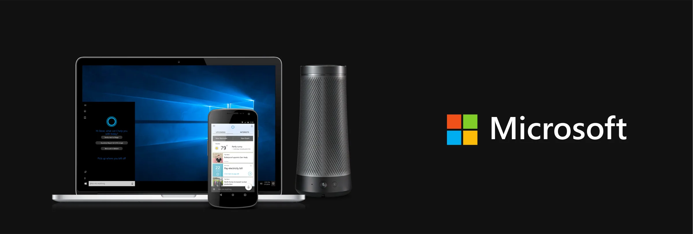
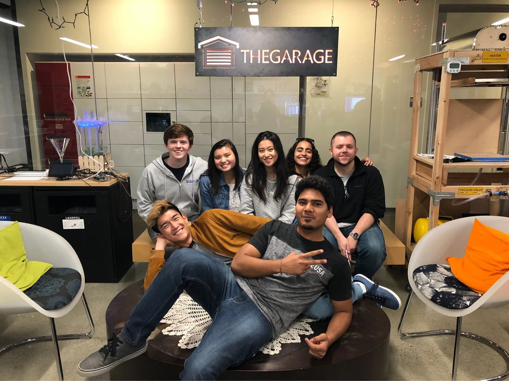
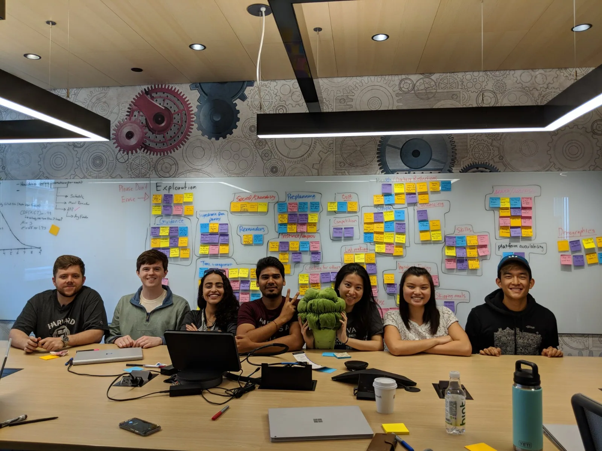
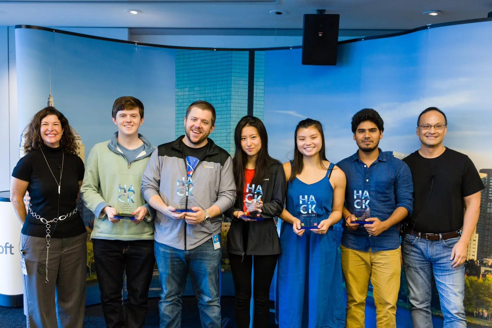

Archive
Microsoft
Designed a first-party skill for Team Cortana to help millennials achieve their goals.

Overview
I interned as a Product Designer at Microsoft's AI and Research Center in Cambridge during the summer of 2018. Working with Team Cortana, I focused on designing a first-party skill tailored for Millennials. Over the course of three months, my responsibilities included field visits, user research, prototyping, design iteration, and exploring visual and motion designs to meet user goals.
Collaborating with six other interns, including software developers, a program manager, and a data scientist, we aimed to make a meaningful impact on Millennials through our product. The experience provided valuable insights into the intersection of design and technology.
Unfortunately, due to a nondisclosure agreement, I am unable to share specific project details and will share my experience working with the team and other stakeholders.
Role
Usability studies, Interaction design, Visual and motion design
Duration
Jun 2018 - Aug 2018
Tools
Adobe XD, Illustrator, After Effects, Premiere

Team Cortana during our product presentation at Redmond.
The Problem
Team Cortana aimed to strengthen its impact in adults' lives by offering assistance in making informed choices regarding meal planning. Existing solutions on various devices and platforms lacked customization to users' preferences, alignment with their busy schedules, and ease of accessibility. Recognizing this gap, the Cortana team saw an opportunity to help users achieve their goals within the constraints of their hectic schedules.
Challenge
After conducting research studies and collaborating with various stakeholders, including Team Bing and Outlook, we decided to design a first-party skill for Cortana aimed at providing quick accessibility for users. Despite initial plans to work with the team in India to implement this first-party skill, technical constraints and a shortened deadline necessitated a shift to implementing third-party skills for Cortana.
This transition required identifying key user journey touchpoints where we could integrate Cortana's voice and chat assistant effectively. The change in implementation direction occurred midway through our internship, prompting me to quickly grasp the new experience and tech stack, including the chat platform. I explored multiple solutions and layouts to ensure alignment with both user and business goals.

Conducted workshops with the team to derive insights from usability studies
Achievements
Our team received the Growth Mindset award for swiftly adapting to a new direction within a tight deadline. I collaborated with the engineering team to implement the updated designs, and we subsequently conducted user testing to validate our design decisions before we deliver the package to the stakeholder.

Learnings and Takeaways
Iterate designs
I adopted a strategy of establishing indirect channels to review designs with users as early as possible in the process. This approach aimed to refine the user experience (UX) swiftly and allocate ample time during the implementation stage to address bugs and handle edge cases effectively.
Product values
I learned to prioritize four key criteria or principles – useful, usable, desirable, and engageable – when designing a product. This approach aims to create a product that not only meets immediate needs but also fosters a long-lasting impact on users, encouraging continuous and meaningful usage.
Collaboration and Communication I facilitated the involvement of engineers and program managers in various workshops focused on research, deriving insights, defining goals, and establishing the Minimum Viable Product (MVP). This collaborative effort fostered alignment across the team, enabling us to collectively address problems.